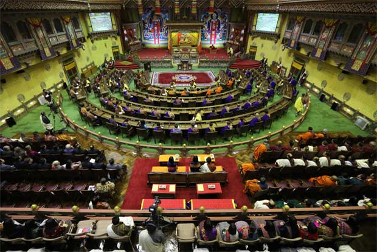
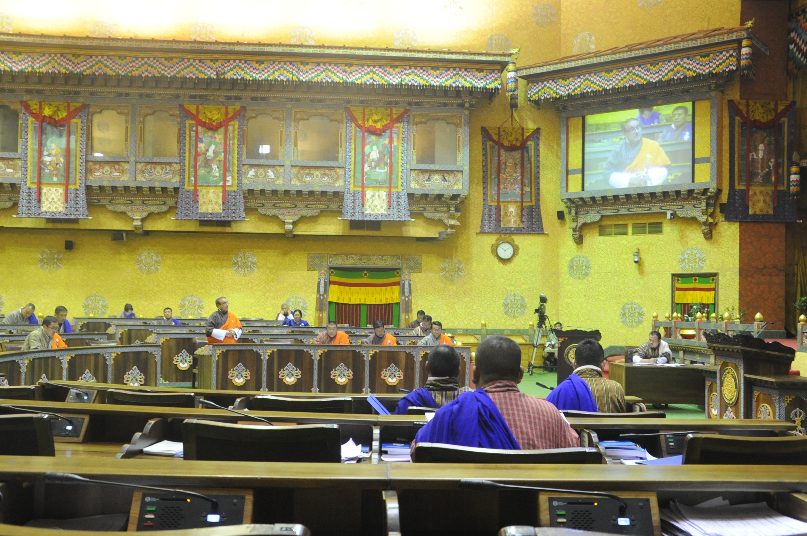
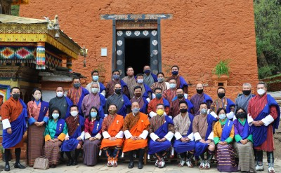
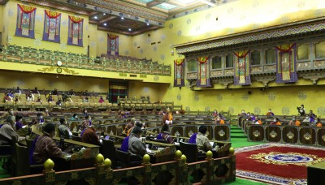
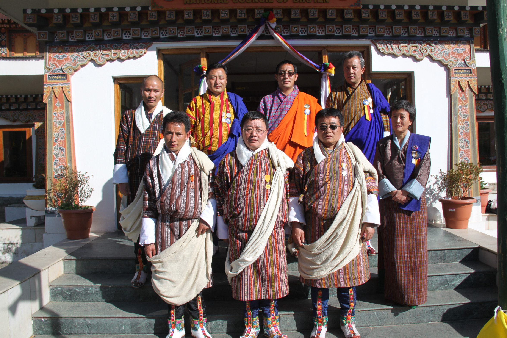
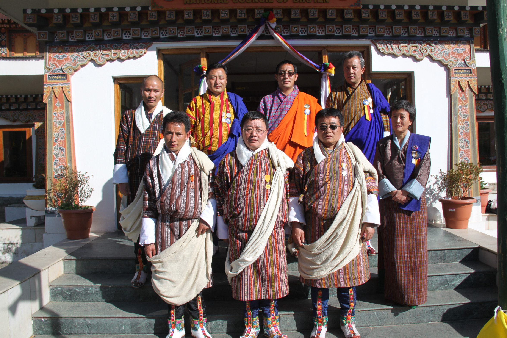

Bhutan’s democratically elected Parliament is the highest legislative institution in the country. It consists of His Majesty the Druk Gyalpo, the National Council (NC) and the National Assembly (NA). Bhutan’s Parliament is bicameral. The two chambers were established in 2008 under Articles 11 and 12 of the Constitution of the Kingdom of Bhutan, 2008. Until 2007, the legislative responsibility in Bhutan was bestowed with the erstwhile Gyalyong Tshogdu (National Assembly), established in 1953, with a total strength of 38 members, later increased to 150 members, representing the people, the Central Monk Body, and the executive. Under the current parliamentary structure, there are a total of 72 members – 25 members in the National Council and 47 members in the National Assembly elected for a term of five years.
Members of the National Assembly are directly elected from 47 constituencies in the country. They belong to one of the political parties in the Parliament – either the ruling or opposition parties. The party that secures the majority seats in the National Assembly forms the government. The other takes the opposition bench. The presiding officer of the National Assembly is the Speaker. Elections to the National Assembly take place in two tiers – primary round and the general election. All political parties registered with the Election Commission of Bhutan contest in the primary round. The two political parties that secure the highest and the second highest number of total votes casted qualify to run for the seats in the National Assembly in the general round of the election. The party that secures the maximum seats in the National Assembly forms the government and the other takes the opposition bench. The National Assembly has the legislative, oversight and representational mandates. It meets twice a year – summer (May-June) and winter (November – December). However, special sessions may also be convened. The proceedings of the house are guided by the Rules of Procedure of the National Assembly and Rules of the Committees.
  The National Council has both legislative and review functions and is also referred to as the House of Review on matters affecting the security and sovereignty of the country and the interests of the nation and the people. The National Council was established in 2008 under Article 11 of the Constitution of Bhutan. Each of the 20 Dzongkhags (districts) directly elect one member to the National Council in a separate election held every five years while five eminent members are appointed by His Majesty the Druk Gyalpo for a term of five years. The National Council is an apolitical body and its members have no affiliation with any political party. The National Council serves for five years from the date of its first sitting and the election is held before the expiry of the term so that the House is reconstituted on the date of expiry of its term. The presiding officer of the house is the Chairperson of the National Council.
 
